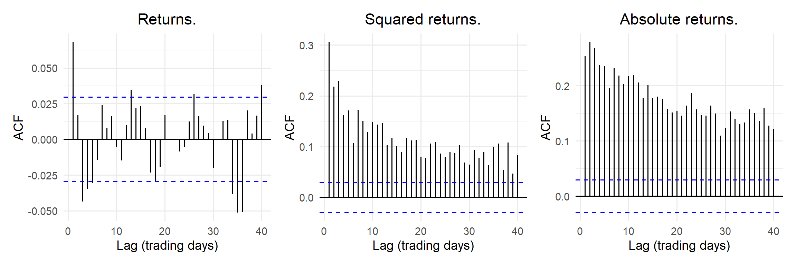
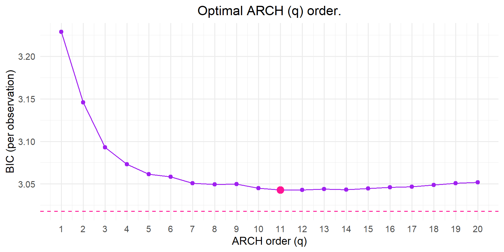
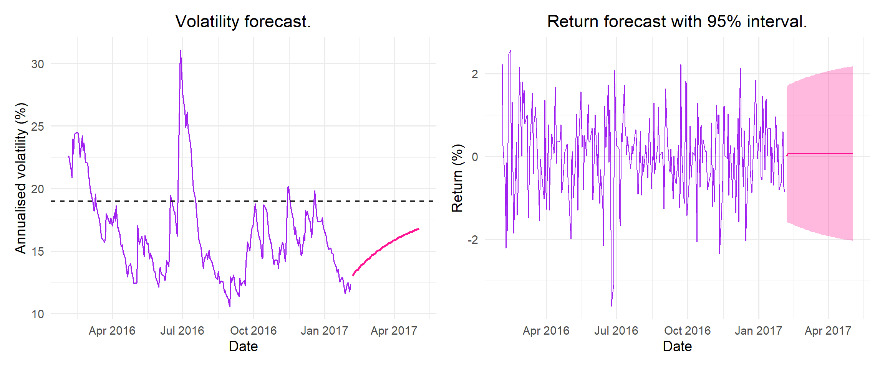

Predicting the volatility of daily Johannesburg Stock Exchange All Share Index returns
Show code
# Load required libraries:library(readxl)library(tidyverse) library(lubridate)library(rugarch)library(forecast) library(FinTS) library(patchwork)library(knitr)# Set seed for reproducibility:set.seed(2026)# Project plotting theme and colours:theme_set(theme_minimal(base_size =14) +theme(plot.title =element_text(hjust =0.5),plot.subtitle =element_text(hjust =0.5)))col_main ="purple"col_accent ="deeppink"model_cols =c("Constant"="black","EWMA"="orange","ARCH"="purple","GARCH-N"="blue","GARCH-t"="grey50","GJR-GARCH-t"="deeppink")
Show code
# Function to find column in vendor spreadsheet from ticker code (row 1) and field (row 2):find_col =function(hdr, code, field) { idx =which(unlist(hdr[1, ]) == code &unlist(hdr[2, ]) == field)if (length(idx) !=1) stop(paste("Could not uniquely find", code, field)) idx}# Function to define a rugarch specification:make_spec =function(model ="sGARCH",garch_order =c(1, 1),dist ="norm",arma =c(0, 0)) {ugarchspec(variance.model =list(model = model, garchOrder = garch_order),mean.model =list(armaOrder = arma, include.mean =TRUE),distribution.model = dist)}
Introduction
The aim of this project is to use conditional variance models to predict the volatility of JSE All Share Index (ALSI) returns. The risk of JSE returns is not constant with periods of high volatility tending to follow periods of high volatility and periods of low volatility tending to follow periods of low volatility. Modelling returns with a constant-variance model understates the risk when it is high and overstates it when it is low.
ARCH (Engle, 1982) and GARCH (Bollerslev, 1986) models let the current conditional variance depend on recent shocks and, for GARCH models, on yesterday’s variance. GJR-GARCH (Glosten et al., 1993) extends the GARCH model to let negative shocks have a larger effect on volatility than positive ones. This is known as the leverage effect. These models are compared with a constant-variance model and the Exponentially Weighted Moving Average (EWMA) benchmark to determine which model gives the best out-of-sample volatility forecasts.
Data
The series used is the daily FTSE/JSE All Share Index total return index \(P_t\) (ticker J203, dividends reinvested) from the Daily Sampled South African Market Index Data 1994–2017 dataset (Gebbie, 2020). The dataset is publicly available and contains no personal information.
Data access instructions. Download the daily workbook from https://doi.org/10.25375/uct.11302325.v1 and save it as _data/PT-DATA-ALBI-JIBAR-JSEIND-Daily-1994-2017.xlsx next to this file. The ALSI is the column on sheet JSE Various Indices whose first header row is J203:XJSE:IND and whose second header row is TRI; the code below finds this column automatically.
Show code
# Specify data path and series:data_path ="_data/PT-DATA-ALBI-JIBAR-JSEIND-Daily-1994-2017.xlsx"sheet_name ="JSE Various Indices"ticker ="J203:XJSE:IND"field ="TRI"# Training and test sets:train_end =as.Date("2012-12-31")ann_factor =252# trading days per yearrefit_every =50# re-estimate rolling models every 50 trading days# Read header rows (rows 1-4):hdr =read_excel(data_path,sheet = sheet_name,col_names =FALSE,n_max =4)# Read in data (starts row 5):raw =read_excel(data_path,sheet = sheet_name,col_names =FALSE,skip =4,na =c("#N/A", "", "NA"),guess_max =10000)# Find date and ALSI columns:date_col =which(sapply(raw, function(x) inherits(x, c("POSIXct", "Date"))))[1]alsi_col =find_col(hdr, ticker, field)# Daily log returns (%):alsi =tibble(date =as.Date(raw[[date_col]]),tri =as.numeric(raw[[alsi_col]])) |>filter(!is.na(date), !is.na(tri)) |>arrange(date) |>distinct(date, .keep_all =TRUE) |>mutate(r =100* (log(tri) -lag(log(tri)))) |>filter(!is.na(r)) |>mutate(sample =if_else(date <= train_end, "Train", "Test"))n_train =sum(alsi$sample =="Train")n_test =sum(alsi$sample =="Test")r_all = alsi$rr_train = alsi$r[alsi$sample =="Train"]r_test = alsi$r[alsi$sample =="Test"]# Save cleaned series:saveRDS(alsi, "_data/project03_alsi_clean.rds")
The series runs from 30 June 1995 to 3 February 2017. The time index is the trading day, so weekends and public holidays are excluded. The daily log returns (%) are modelled,
Asset prices are non-stationary, with a variance that is not bounded, whereas log returns are approximately stationary. The series consists of 5396 daily returns. The models are estimated on the training set (July 1995 to December 2012, 4373 returns) and evaluated on the test set (January 2013 to February 2017, 1023 returns).
Table 1: Summary statistics of daily ALSI log returns (%) from July 1995 to February 2017 (full series).
Sample
N
Mean
Std dev
Annual volatility
Skewness
Excess kurtosis
Min
Max
Full
5396
0.055
1.225
19.444
-0.446
6.005
-12.689
7.423
Training
4373
0.059
1.278
20.284
-0.463
6.067
-12.689
7.423
Test
1023
0.040
0.967
15.353
-0.253
1.169
-3.622
4.159
Figure 1 illustrates an increasing trend in the index level from 1995 to 2017. In comparison, Figure 2 shows the daily returns fluctuating around a mean of approximately zero. Periods of large returns tend to be followed by further periods of large returns and periods of small returns tend to be followed by small returns. This is indicative of volatility clustering. This is most visible during the 1997-1998 and 2008-2009 financial crises. The summary statistics in Table 1 show that the returns are negatively skewed (skewness = -0.446) and have heavier tails than a normal distribution (excess kurtosis = 6.005). This suggests that large negative returns occur more often than what would be expected under a normal distribution.
Show code
acf_returns =ggAcf(r_train, lag.max =40) +labs(title ="Returns.", x ="Lag (trading days)", y ="ACF")acf_sq_returns =ggAcf(r_train^2, lag.max =40) +labs(title ="Squared returns.", x ="Lag (trading days)", y ="ACF")acf_abs_returns =ggAcf(abs(r_train), lag.max =40) +labs(title ="Absolute returns.", x ="Lag (trading days)", y ="ACF")acf_returns | acf_sq_returns | acf_abs_returns

Figure 3: ACF of daily returns, squared returns and absolute returns in the training set. The dashed lines indicate approximate 95% bounds.
Figure 3 illustrates that the returns are weakly autocorrelated, since most of the sample autocorrelations lie within the 95% bounds. In comparison, both the squared and absolute returns have significant autocorrelations that decay slowly as the lag increases. This suggests that the size of the returns can be predicted even if the direction cannot. This is indicative of volatility clustering and motivates the use of conditional variance models, which allow the variance of the returns to change over time.
Model fitting
Conditional variance models consist of both a mean and a variance equation (Department of Statistical Sciences, 2026):
where \(\mu_t=\mu+\phi r_{t-1}\), \(\sigma_t^2\) is the conditional variance and \(D\) is the standard normal or a standardised Student-\(t\) distribution with \(\nu\) degrees of freedom.
In the ARCH model, the conditional variance depends on past squared shocks. The GARCH model lets the conditional variance depend on its own past as well as on past squared shocks. The GJR-GARCH model is a threshold model that captures the leverage effect, where negative shocks increase volatility more than positive shocks of the same magnitude.
Table 2: Conditional variance equations of the candidate models.
In Table 2, \(I_{t-i}\) is an indicator variable equal to \(1\) if \(\varepsilon_{t-i} < 0\) and \(0\) otherwise. The parameters are restricted so that \(\alpha_0 > 0\) and \(\alpha_i, \beta_j, \gamma_i \ge 0\), which ensures that the conditional variance is always positive. The GARCH and GJR-GARCH models are fitted with \(p = q = 1\).
The persistence, \(\rho\), measures how long a volatility shock lasts. For GARCH(1,1) persistence is defined as \(\rho = \alpha + \beta\). For GJR-GARCH(1,1) with a symmetric distribution \(D\) persistence is \(\rho = \alpha + \beta + \gamma/2\), since negative shocks occur approximately half of the time. If \(\rho < 1\), the variance process is stationary and volatility reverts to a long-run level. This long-run level is the unconditional variance, \(\alpha_0/(1-\rho)\). The half-life of a volatility shock, \(\log(0.5)/\log(\rho)\), is the number of trading days it takes for the effect of a shock to halve.
These models are compared with two benchmarks. The first is a constant-variance model, \(\sigma_t^2 = s^2\), where \(s^2\) is the variance of the training sample. The second is EWMA, \(\sigma_t^2 = 0.94\,\sigma_{t-1}^2 + 0.06\,\varepsilon_{t-1}^2\) (J.P. Morgan/Reuters, 1996). EWMA is a GARCH(1,1) model with \(\alpha_0 = 0\) and \(\alpha + \beta = 1\), where the parameters are fixed as opposed to estimated. Thus, EWMA has no long-run variance to revert to. All ARCH and GARCH models are estimated by maximum likelihood using the rugarch package (Ghalanos, 2024).
Mean model and ARCH effects
Before the volatility of a series can be modelled, the conditional mean of the returns must be modelled. The optimal ARMA model is fitted to the returns to capture any predictable structure in the mean. The residuals of this model represent the shocks, \(\varepsilon_t\), which are then used to model the conditional variance. Any autocorrelation that the mean model does not capture would distort the variance model fitted to these residuals. Thus, the mean model must be specified correctly before an ARCH or GARCH model can be fitted.
Show code
# Parameter grid:arima_grid =expand_grid(p =0:2, q =0:2)# Function to fit ARIMA model and store information criteria:arima_fxn =function(dat, p, q) { fit =arima(dat, order =c(p, 0, q), method ="ML")tibble(`ARIMA(p,d,q)`=paste0("(", p, ",0,", q, ")"),loglik =as.numeric(logLik(fit)),AIC =AIC(fit),BIC =BIC(fit))}arima_res = arima_grid |>pmap(\(p, q) arima_fxn(r_train, p, q)) |>list_rbind() |>arrange(BIC)arima_order =c(1, 0) kable(arima_res, digits =3)
Table 3: Log-likelihood, AIC and BIC of the candidate ARIMA(p,0,q) mean models on the training sample, in increasing order of BIC.
ARIMA(p,d,q)
loglik
AIC
BIC
(1,0,0)
-7266.177
14538.35
14557.50
(0,0,1)
-7266.523
14539.05
14558.20
(2,0,2)
-7254.244
14520.49
14558.79
(0,0,2)
-7265.331
14538.66
14564.19
(2,0,0)
-7265.833
14539.67
14565.20
(1,0,1)
-7266.035
14540.07
14565.60
(0,0,0)
-7276.328
14556.66
14569.42
(1,0,2)
-7264.226
14538.45
14570.37
(2,0,1)
-7264.724
14539.45
14571.36
Table 3 displays the log-likelihood, AIC and BIC values for all candidate ARIMA models. BIC selects ARIMA(1,0,0) as the optimal model, whereas AIC selects the more complex ARIMA(2,0,2). The log-likelihood always favours the more complicated model, since the addition of more parameters can only improve the fit. However, this can lead to overfitting. BIC penalises additional parameters more heavily than AIC. This is important given the large training sample (over 4000 returns). Thus, ARIMA(1,0,0) is selected as the mean model. The ARIMA likelihood assumes a constant variance, which the tests below reject, so these information criteria are only approximate. The adequacy of the AR(1) mean is therefore checked again on the standardised residuals of the fitted GARCH models (Table 8).
An ARIMA model assumes that the variance of the residuals is constant. This assumption is tested using the Ljung–Box test on the squared residuals as well as Engle’s (1982) ARCH LM test. A small \(p\)-value rejects the null hypothesis of no ARCH effects. This suggests the presence of volatility clustering and justifies the use of an ARCH or GARCH model.
Show code
fit_arima =arima(r_train, order =c(arima_order[1], 0, arima_order[2]), method ="ML")fit_mean =as.numeric(residuals(fit_arima))lags =c(5, 10, 20)arch_tbl =tibble(Lag = lags,`Engle's LM`=sapply(lags, function(L) ArchTest(fit_mean, lags = L)$statistic),`LM p-value`=sapply(lags, function(L) ArchTest(fit_mean, lags = L)$p.value),`LB squared residuals`=sapply(lags, function(L) Box.test(fit_mean^2, lag = L, type ="Ljung-Box")$statistic),`LB p-value`=sapply(lags, function(L) Box.test(fit_mean^2, lag = L, type ="Ljung-Box")$p.value))lm10 = arch_tbl$`Engle's LM`[arch_tbl$Lag ==10] # used in diagnostics sectionarch_tbl |>mutate(across(c(`LM p-value`, `LB p-value`), ~format.pval(.x, eps =0.001))) |>kable(digits =3)
Table 4: Engle’s ARCH LM test and the Ljung–Box test on the squared residuals of the ARIMA(1,0,0) model at lags 5, 10 and 20.
Lag
Engle’s LM
LM p-value
LB squared residuals
LB p-value
5
646.753
< 0.001
1201.460
< 0.001
10
710.147
< 0.001
1663.234
< 0.001
20
735.903
< 0.001
2239.527
< 0.001
In Table 4, both the Ljung–Box test and Engle’s ARCH LM test reject the null hypothesis of no ARCH effects at all tested lags (\(p\) < 0.001). This indicates that the squared shocks are autocorrelated, which is evidence of volatility clustering. Thus, the assumption of constant variance does not hold, which justifies the use of a conditional variance model.
ARCH order selection
Show code
# Fit ARCH(q) models and store information criteria:q_values =1:20arch_results =vector("list", length(q_values))for (q in q_values) { arch_fit =tryCatch(ugarchfit(spec =make_spec("sGARCH", c(q, 0), "norm", arima_order),data = r_train,solver ="hybrid"),error =function(e) NULL)# Record NA if fit failed or did not converge: ok =!is.null(arch_fit) &&convergence(arch_fit) ==0 ic =if (ok) infocriteria(arch_fit) elseNULL arch_results[[q]] =tibble(Model =paste0("ARCH(", q, ")"),q = q,loglik =if (ok) likelihood(arch_fit) elseNA_real_,AIC =if (ok) ic["Akaike", 1] elseNA_real_,BIC =if (ok) ic["Bayes", 1] elseNA_real_)}arch_results =list_rbind(arch_results)# ARCH order with lowest BIC:q_star = arch_results$q[which.min(arch_results$BIC)]# Fit GARCH(1,1) with same mean and distribution for comparison:garch11_fit =ugarchfit(spec =make_spec("sGARCH", c(1, 1), "norm", arima_order),data = r_train,solver ="hybrid")garch11_bic =infocriteria(garch11_fit)["Bayes", 1]
Show code
ggplot(data = arch_results,mapping =aes(x = q, y = BIC)) +geom_line(col = col_main) +geom_point(col = col_main, size =2) +geom_point(data = arch_results[arch_results$q == q_star, ], col = col_accent, size =4) +geom_hline(yintercept = garch11_bic, linetype ="dashed", col = col_accent) +scale_x_continuous(breaks = q_values) +labs(title ="Optimal ARCH (q) order.",x ="ARCH order (q)",y ="BIC (per observation)")

Figure 4: BIC (per observation) of ARCH(q) models with normal innovations. The pink point marks the lowest BIC and the pink dashed line indicates the BIC of GARCH(1,1) with the same mean and distribution.
Figure 4 illustrates the BIC of ARCH(\(q\)) models for \(q = 1, \dots, 20\). The BIC decreases as \(q\) increases and reaches a minimum at \(q = 11\). Beyond \(q = 11\), the BIC increases slightly, since the improvement in fit from additional lags is outweighed by the penalty for the additional parameters. This suggests that a pure ARCH model requires a large number of lags to capture the slow decay of volatility, which is consistent with the slowly decaying autocorrelation of the squared returns in Figure 3. However, all of the candidate ARCH models have larger BIC values than a GARCH(1,1) model, despite GARCH(1,1) having far fewer parameters. This motivates the use of GARCH models, which give geometrically declining weight to all past squared shocks as opposed to a fixed number of lags.
Candidate models
Show code
# Specify candidate models:spec_list =list("ARCH"=make_spec("sGARCH", c(q_star, 0), "norm", arima_order),"GARCH-N"=make_spec("sGARCH", c(1, 1), "norm", arima_order),"GARCH-t"=make_spec("sGARCH", c(1, 1), "std", arima_order),"GJR-GARCH-t"=make_spec("gjrGARCH", c(1, 1), "std", arima_order))# Fit each model to training set:fits =map(spec_list, \(spec) ugarchfit(spec = spec, data = r_train, solver ="hybrid"))
Table 5: In-sample comparison of the candidate models, in increasing order of BIC. AIC and BIC are per observation, the half-life is in trading days and the unconditional volatility is annualised.
Model
Parameters
LogLik
AIC
BIC
Persistence
Half-life
Unconditional volatility (%)
GJR-GARCH-t
7
-6493.542
2.973
2.983
0.987
54.893
20.065
GARCH-t
6
-6513.097
2.982
2.990
0.992
84.966
23.862
GARCH-N
5
-6577.512
3.011
3.018
0.993
98.205
25.862
ARCH
14
-6594.670
3.022
3.043
0.864
4.754
22.662
Show code
# Best model:best_name = ic_table$Model[1]best_fit = fits[[best_name]]
Table 5 compares the candidate models fitted to the training set. GJR-GARCH-\(t\) is selected as the optimal model, since it has the lowest AIC and BIC values (AIC = 2.973, BIC = 2.983). Changing from normal to Student-\(t\) innovations adds one parameter but increases the log-likelihood by 64.4, lowering both the AIC and BIC. Allowing for asymmetry in the GJR-GARCH-\(t\) model increases the log-likelihood by an additional 19.6. The ARCH(11) model performs the worst despite having the most parameters. This confirms that GARCH models capture the persistence of volatility more efficiently than a pure ARCH model.
All of the fitted models have a persistence less than 1, meaning that volatility reverts to a long-run level. The GARCH models are highly persistent (persistence = 0.987 to 0.993), so volatility shocks take a long half-life (half-life = 55 to 98 trading days). In comparison, ARCH(11) has a very short half-life (half-life < 5 trading days), meaning that the ARCH model cannot capture how long periods of high volatility last. For ARCH(11), the persistence is the sum of the \(\alpha_i\) and the half-life is only a rough guide, since in a pure ARCH model the effect of a shock does not decay geometrically. The unconditional volatility of GJR-GARCH-\(t\) (20.1% p.a.) is close to the volatility of the training sample (20.3% p.a. in Table 1), whereas the symmetric GARCH models overestimate it (23.9% p.a. and 25.9% p.a.).
Show code
# Robust coefficient table of best model:coefs = best_fit@fit$robust.matcoefparam_table =tibble(Parameter =c("$\\mu$", "$\\phi$", "$\\alpha_0$", "$\\alpha$", "$\\beta$", "$\\gamma$", "$\\nu$"),Description =c("Mean daily return (%)","AR(1) coefficient","Variance intercept","Reaction to last shock (ARCH)","Carry-over of last variance (GARCH)","Extra reaction to negative shocks (leverage)","Student-t degrees of freedom"),Estimate = coefs[, 1],`Robust SE`= coefs[, 2],`p-value`= coefs[, 4])kable(param_table, digits =3)
Table 6: Parameter estimates of the selected GJR-GARCH(1,1) model with Student-t innovations.
Parameter
Description
Estimate
Robust SE
p-value
\(\mu\)
Mean daily return (%)
0.078
0.016
0.000
\(\phi\)
AR(1) coefficient
0.075
0.014
0.000
\(\alpha_0\)
Variance intercept
0.020
0.006
0.002
\(\alpha\)
Reaction to last shock (ARCH)
0.049
0.012
0.000
\(\beta\)
Carry-over of last variance (GARCH)
0.893
0.014
0.000
\(\gamma\)
Extra reaction to negative shocks (leverage)
0.090
0.019
0.000
\(\nu\)
Student-t degrees of freedom
9.867
1.562
0.000
Table 6 displays the estimated parameters of the selected GJR-GARCH-\(t\) model. All of the parameters are statistically significant at the 1% level (\(p\) < 0.01). In the mean equation, both the average daily return (\(\hat\mu\) = 0.078%) and the AR(1) coefficient (\(\hat\phi\) = 0.075) are small, suggesting that returns are only weakly predictable from the previous day’s return.
In the variance equation, \(\hat\alpha\) measures how volatility reacts to a positive shock (\(\hat\alpha\) = 0.049) and \(\hat\alpha + \hat\gamma\) measures how it reacts to a negative shock (\(\hat\alpha + \hat\gamma\) = 0.140). Thus, a negative shock increases the following day’s variance by approximately 2.8 times as much as a positive shock of the same size, providing evidence of a leverage effect. The large value of \(\hat\beta\) (0.893) indicates that approximately 90% of today’s variance is carried over to tomorrow and the high persistence (\(\hat\alpha + \hat\beta + \hat\gamma/2\) = 0.987 in Table 5), indicates that volatility shocks die out slowly. The estimated degrees of freedom (\(\hat\nu\) = 9.9) indicate that the errors have heavier tails than a normal distribution, even after volatility clustering has been accounted for. This supports the use of Student-\(t\) innovations.
GARCH(1,1) from first principles
Show code
# Function to calculate negative log-likelihood of Gaussian GARCH(1,1) with constant mean:garch11_nll_fxn =function(par, r) { mu = par[1] omega = par[2] alpha = par[3] beta = par[4]# Return large value if parameter constraints broken:if (omega <=0|| alpha <0|| beta <0|| alpha + beta >=1) {return(1e10) }# Calculate shocks: e = r - mu# Initialise with sample variance: n =length(r) s2 =numeric(n) s2[1] =mean((r -mean(r))^2)# Recursion for conditional variance:for (t in2:n) { s2[t] = omega + alpha * e[t-1]^2+ beta * s2[t-1] }# Negative log-likelihood:0.5*sum(log(2* pi) +log(s2) + e^2/ s2)}# Starting values:start_val =c(mean(r_train), 0.05*var(r_train), 0.08, 0.90)# Maximise log-likelihood:own_fit =optim(par = start_val,fn = garch11_nll_fxn,r = r_train,method ="L-BFGS-B",lower =c(-Inf, 1e-8, 0, 0),upper =c(Inf, Inf, 1, 1),hessian =TRUE)own_est = own_fit$parown_se =sqrt(diag(solve(own_fit$hessian))) # Fit same model with rugarch:pkg_fit =ugarchfit(spec =make_spec("sGARCH", c(1, 1), "norm", c(0, 0)),data = r_train,solver ="hybrid")pkg_est =coef(pkg_fit)pkg_se = pkg_fit@fit$matcoef[, 2]# Compare:own_tbl =tibble(Parameter =c("$\\mu$", "$\\alpha_0$", "$\\alpha$", "$\\beta$", "Log-likelihood"),`First principles`=c(own_est, -own_fit$value),`First principles SE`=c(own_se, NA),rugarch =c(pkg_est, likelihood(pkg_fit)),`rugarch SE`=c(pkg_se, NA))options(knitr.kable.NA ="-")kable(own_tbl, digits =4)
Table 7: In-sample comparison of a Gaussian GARCH(1,1) with a constant mean implemented both from first principles and with the rugarch package.
Parameter
First principles
First principles SE
rugarch
rugarch SE
\(\mu\)
0.0952
0.0143
0.0951
0.0143
\(\alpha_0\)
0.0194
0.0046
0.0194
0.0046
\(\alpha\)
0.1110
0.0103
0.1109
0.0103
\(\beta\)
0.8817
0.0106
0.8819
0.0106
Log-likelihood
-6589.7137
-
-6589.7168
-
Table 7 compares a Gaussian GARCH(1,1) model with a constant mean, coded from first principles, with the same model fitted using the rugarch package. All of the parameter estimates agree to 3 decimal places and the standard errors agree to 4 decimal places. The log-likelihoods are almost identical (difference in log-likelihood = 0.003). The small differences can be attributed to the different optimisers used to maximise the likelihood. This confirms that my implementation of the GARCH(1,1) likelihood is correct.
Model diagnostics
Show code
diag_tab =imap(fits, function(fit, model) {# Standardised residuals z_t = e_t / sigma_t: z =as.numeric(residuals(fit, standardize =TRUE))tibble(Model = model,# Ljung-Box on z:`LB z (10)`=Box.test(z, lag =10, type ="Ljung-Box", fitdf =sum(arima_order))$p.value,# Ljung-Box on z^2:`LB z² (10)`=Box.test(z^2, lag =10, type ="Ljung-Box", fitdf =2)$p.value,# Engle's ARCH LM test on z:`ARCH LM (10)`=ArchTest(z, lags =10)$p.value,# Excess kurtosis of z:`Excess kurtosis of z`=mean((z -mean(z))^4) /sd(z)^4-3)}) |>list_rbind()kurt_train = summary_tbl$`Excess kurtosis`[summary_tbl$Sample =="Training"]kurt_gjr = diag_tab$`Excess kurtosis of z`[diag_tab$Model =="GJR-GARCH-t"]kable(diag_tab, digits =3)
Table 8: Diagnostics on the standardised residuals \(z_t\) of each model. Ljung–Box p-values at lag 10 for \(z_t\) and \(z_t^2\), Engle’s ARCH LM p-value at lag 10 and the excess kurtosis of \(z_t\).
Figure 5: Diagnostics for the selected GJR-GARCH-t model: standardised residuals over time (top), ACF of the squared standardised residuals (bottom left) and QQ plot against the fitted Student-t distribution (bottom right).
Table 8 displays the diagnostics of the standardised residuals, \(z_t\), of each model. The Ljung–Box \(p\)-values for \(z_t\) are above 0.05 for all models (\(p\) > 0.05). Thus, the null hypothesis of no autocorrelation is not rejected, which suggests that the AR(1) mean equation is adequate.
Before the models were fitted, Engle’s ARCH LM statistic at lag 10 was large (LM = 710.1, \(p\) < 0.001; Table 4). After fitting, the ARCH LM \(p\)-values of the three GARCH models increase (\(p\) = 0.010 to 0.043), although they remain significant at the 5% level. However, with over 4000 observations, even very small autocorrelations become statistically significant. Figure 5 shows that the autocorrelations remaining in the squared standardised residuals are small in comparison to those of the squared returns in Figure 3. This indicates that most of the volatility clustering has been removed.
ARCH(11) performs the best on these diagnostics since its 11 lags absorb the short-term dependence. However, as seen in Table 5, it cannot capture the persistence of volatility. Of the GARCH models, GJR-GARCH-\(t\) has the least remaining dependence in the squared standardised residuals (Ljung–Box \(p\) = 0.017).
The excess kurtosis decreases from the training-sample returns (excess kurtosis = 6.067; Table 1) to the standardised residuals of GJR-GARCH-\(t\) (excess kurtosis = 1.361). This suggests that most of the heavy tails in the returns can be attributed to volatility clustering. The remaining excess kurtosis is close to that of a Student-\(t\) distribution with \(\hat\nu \approx 10\) degrees of freedom (\(6/(\nu - 4) \approx 1.0\)), which supports the use of Student-\(t\) innovations. This is confirmed by the QQ plot in Figure 5, where the points lie on the diagonal except for a few extreme negative standardised residuals.
Out-of-sample evaluation
The conditional variance models are evaluated on the test set using rolling one-day-ahead forecasts. Each model is re-estimated every 50 trading days using an expanding window, so that all of the data available up to each forecast origin is used. This produces a one-day-ahead variance forecast for each of the 1023 days in the test set. The constant-variance model uses the variance of the training sample, while EWMA is initialised using the variance of the first 63 returns in the training set.
Show code
# Convert returns to an xts object:r_xts = xts::xts(alsi$r, order.by = alsi$date)# Directory to save rolling forecasts (delete file to re-fit model):roll_dir ="_data/rolling"dir.create(roll_dir, showWarnings =FALSE, recursive =TRUE)roll_list =list()for (model innames(spec_list)) { file_name =file.path(roll_dir, paste0(gsub("[^A-Za-z0-9]", "_", model), ".rds"))# Load saved forecasts if they exist:if (file.exists(file_name)) { roll_list[[model]] =readRDS(file_name) } else {# One-day-ahead forecasts for each test day, re-estimated every 50 days: roll =ugarchroll(spec = spec_list[[model]],data = r_xts,forecast.length = n_test,refit.every = refit_every,refit.window ="recursive", # expanding windowsolver ="hybrid",calculate.VaR =TRUE,VaR.alpha =c(0.01, 0.05))saveRDS(roll, file_name) roll_list[[model]] = roll }}
The true variance cannot be observed, so the volatility forecasts are compared to a noisy proxy, the squared return, \(\hat\varepsilon_t^2\). Patton (2011) shows that the mean squared error (MSE) and the QLIKE loss function, \(\text{QLIKE} = \log h_t + \hat\varepsilon_t^2 / h_t\), where \(h_t\) is the forecast variance, both rank the forecasts correctly even though the proxy is noisy. However, QLIKE depends on the ratio of the squared return to the forecast variance, as opposed to their difference. This means that it is less affected by extreme days than MSE. Thus, the models are ranked using QLIKE.
Figure 6: Out-of-sample one-day-ahead volatility forecasts (annualised %) of the constant model, EWMA and the best GARCH model. Annualised absolute returns are shown in grey.
Table 9 reports the average MSE and QLIKE loss of each model’s one-day-ahead variance forecasts over the test set. GJR-GARCH-\(t\) has the lowest loss on both measures (QLIKE = 0.805, MSE = 2.617). This agrees with the model selected by BIC on the training set. The constant-variance model performs the worst (QLIKE = 1.063), which provides evidence that the volatility of ALSI returns is predictable. However, the test period is much calmer than the training period (annual volatility of 15.4% compared with 20.3%, and excess kurtosis of 1.2 compared with 6.1; Table 1). The constant-variance model keeps the training-sample variance throughout, so it overpredicts volatility on most test days, which accounts for much of its large loss. The pure ARCH model slightly outperforms EWMA (QLIKE = 0.840 and 0.849, respectively). As EWMA has fixed parameters (\(\alpha\) = 0.06, \(\beta\) = 0.94) and no constant, it has no long-run variance to revert to. Both of these models perform worse than GARCH-N and GARCH-\(t\) (QLIKE = 0.826 and 0.825, respectively). Allowing for asymmetry improves the forecasts further, with GJR-GARCH-\(t\) achieving the lowest loss overall (QLIKE = 0.805).
MSE ranks EWMA slightly above GARCH-N and GARCH-\(t\) (MSE = 2.646, compared with 2.653 and 2.647, respectively). However, these differences are very small and MSE is more affected by extreme returns than QLIKE. Thus, the models are ranked using QLIKE.
Figure 6 displays the one-day-ahead volatility forecasts of the constant-variance model, EWMA and GJR-GARCH-\(t\) over the test set, with the annualised absolute returns shown in grey. The constant-variance model is a flat line, so it underpredicts volatility when returns spike and overpredicts it in calm periods. In comparison, both EWMA and GJR-GARCH-\(t\) rise sharply after large returns and then decay slowly, which reflects the high persistence estimated earlier. During calm periods, EWMA drops lower than GJR-GARCH-\(t\) since it has no long-run variance to revert to. GJR-GARCH-\(t\) also rises more than EWMA after large falls in the index, due to the leverage effect.
Tests of forecast accuracy
The differences in QLIKE between the models in Table 9 are small, so the Diebold–Mariano test (Diebold & Mariano, 1995) is used to determine whether they are statistically significant. This test is not covered in the course notes, so the dm.test() function from the forecast package (Hyndman & Khandakar, 2008) is used. For each test day, the loss differential is the QLIKE loss of GJR-GARCH-\(t\) minus the QLIKE loss of a competing model. The null hypothesis is that the two models have equal expected loss, so that the mean loss differential is zero. A negative test statistic means that GJR-GARCH-\(t\) has the lower average loss.
Show code
# Note: Patton's (2011) normalised QLIKE is non-negative qlike_wide = oos |>mutate(L = proxy / h -log(proxy / h) -1) |>select(date, Model, L) |>pivot_wider(names_from = Model, values_from = L)rivals =setdiff(names(model_cols), "GJR-GARCH-t")dm_tbl =map(rivals, function(m) { dm =dm.test(e1 = qlike_wide[["GJR-GARCH-t"]],e2 = qlike_wide[[m]],alternative ="two.sided",h =1,power =1)tibble(Comparison =paste("GJR-GARCH-t vs", m),`Mean loss difference`=mean(qlike_wide[["GJR-GARCH-t"]] - qlike_wide[[m]]),`DM statistic`=unname(dm$statistic),`p-value`= dm$p.value)}) |>list_rbind()# Sentence for text and summary page:fmt_models =function(x) knitr::combine_words(x)dm_sig = rivals[dm_tbl$`p-value`<0.05]dm_nonsig = rivals[dm_tbl$`p-value`>=0.05]dm_text =paste0(if (length(dm_sig) >0) {paste0("at the 5% level, GJR-GARCH-$t$ has a significantly lower QLIKE loss than ", fmt_models(dm_sig), ". ") } else {"at the 5% level, GJR-GARCH-$t$ does not have a significantly lower QLIKE loss than any other model. " },if (length(dm_nonsig) >0) {paste0("Its advantage over ", fmt_models(dm_nonsig), " is not statistically significant.") } else {"" })dm_tbl |>mutate(`p-value`=format.pval(`p-value`, digits =3, eps =0.001)) |>kable(digits =3)
Table 10: Diebold–Mariano tests of equal QLIKE loss between GJR-GARCH-t and each other model (one-day-ahead forecasts, two-sided). A negative statistic means that GJR-GARCH-t has the lower average loss.
Comparison
Mean loss difference
DM statistic
p-value
GJR-GARCH-t vs Constant
-0.258
-9.668
< 0.001
GJR-GARCH-t vs EWMA
-0.045
-2.684
0.00739
GJR-GARCH-t vs ARCH
-0.035
-3.799
< 0.001
GJR-GARCH-t vs GARCH-N
-0.021
-3.914
< 0.001
GJR-GARCH-t vs GARCH-t
-0.020
-3.692
< 0.001
Table 10 shows that at the 5% level, GJR-GARCH-\(t\) has a significantly lower QLIKE loss than Constant, EWMA, ARCH, GARCH-N, and GARCH-t. Since the squared return is a very noisy proxy for the true variance, small differences in average loss are difficult to detect over a test set of 1023 days.
Value-at-Risk backtests
The QLIKE loss evaluates the forecast variance, but not the shape of the forecast distribution. The choice between normal and Student-\(t\) innovations matters most in the tails, so the forecasts are also evaluated using the one-day-ahead Value-at-Risk (VaR). The \(100\alpha\%\) VaR is the \(\alpha\) quantile of the forecast return distribution, so it is the lower limit of a \(100(1 - 2\alpha)\%\) prediction interval for the next day’s return. A violation occurs when the realised return falls below the VaR. If the forecasts are correct, violations should occur on a proportion \(\alpha\) of days (tested with Kupiec’s (1995) unconditional coverage test) and should not cluster together (tested with Christoffersen’s (1998) conditional coverage test). These tests are not covered in the course notes, so the VaRTest() function from rugarch is used. The VaR of the GARCH-family models comes from the rolling forecasts, and the VaR of the constant-variance and EWMA benchmarks uses normal quantiles.
Show code
var_levels =c(0.01, 0.05)# GARCH-family VaR from the rolling forecasts:var_garch =imap(roll_list, function(roll, model) { v =as.data.frame(roll, which ="VaR")map(var_levels, function(a) {tibble(Model = model,alpha = a,actual = v$realized,VaR = v[[grep(paste0("\\(", a *100, "%\\)"), names(v))]]) }) |>list_rbind()}) |>list_rbind()# Benchmark VaR using normal quantiles:var_bench = oos |>filter(Model %in%c("Constant", "EWMA")) |>cross_join(tibble(alpha = var_levels)) |>transmute(Model =as.character(Model), alpha,actual = r,VaR = mu_tr +qnorm(alpha) * sigma)# Kupiec and Christoffersen tests:var_tbl =bind_rows(var_bench, var_garch) |>group_by(Model, alpha) |>group_modify(function(d, key) { vt =VaRTest(alpha = key$alpha, actual = d$actual, VaR = d$VaR)tibble(Expected = vt$expected.exceed,Violations = vt$actual.exceed,`Kupiec p`= vt$uc.LRp,`Christoffersen p`= vt$cc.LRp) }) |>ungroup() |>mutate(Model =factor(Model, levels =names(model_cols)),Level =paste0(alpha *100, "%")) |>arrange(alpha, Model) |>select(Level, Model, Expected, Violations, `Kupiec p`, `Christoffersen p`)# Models passing both tests at 1% level:var_1 = var_tbl |>filter(Level =="1%")var_pass =as.character(var_1$Model[var_1$`Kupiec p`>=0.05& var_1$`Christoffersen p`>=0.05])var_fail =setdiff(as.character(var_1$Model), var_pass)var_text =paste0(if (length(var_pass) >0) {paste0("at the 1% level, ", fmt_models(var_pass), " pass both tests") } else {"at the 1% level, none of the models pass both tests" },if (length(var_fail) >0) {paste0(", while ", fmt_models(var_fail), " are rejected by at least one test.") } else {"." })# Save results for summary page:saveRDS(list(dm_text = dm_text, var_text = var_text), "_data/project03_results.rds")kable(var_tbl, digits =3)
Table 11: Value-at-Risk backtests of the one-day-ahead forecasts over the test set at the 1% and 5% levels. Small p-values reject correct coverage (Kupiec) or correct coverage with independent violations (Christoffersen).
Level
Model
Expected
Violations
Kupiec p
Christoffersen p
1%
Constant
10
7
0.282
0.061
1%
EWMA
10
23
0.001
0.002
1%
ARCH
10
20
0.007
0.017
1%
GARCH-N
10
20
0.007
0.017
1%
GARCH-t
10
14
0.262
0.439
1%
GJR-GARCH-t
10
13
0.404
0.597
5%
Constant
51
30
0.001
0.005
5%
EWMA
51
70
0.010
0.013
5%
ARCH
51
52
0.903
0.968
5%
GARCH-N
51
55
0.585
0.861
5%
GARCH-t
51
61
0.170
0.382
5%
GJR-GARCH-t
51
53
0.792
0.853
Table 11 shows that at the 1% level, Constant, GARCH-t, and GJR-GARCH-t pass both tests, while EWMA, ARCH, and GARCH-N are rejected by at least one test. At the 1% level, 1023 test days give approximately 10 expected violations. Models with normal innovations (EWMA, ARCH and GARCH-N) understate the probability of extreme losses, which shows as more violations than expected, whereas the Student-\(t\) models allow for heavier tails. At the 5% level, the choice of distribution matters less, since the 5% quantiles of the normal and Student-\(t\) distributions are similar. However, the test set contains few extreme days, so these tests have limited power.
Forecasting
The preferred model, GJR-GARCH(1,1)-\(t\), is re-estimated on the full sample (1995–2017) and used to forecast volatility over the next 63 trading days.
Show code
# Refit the best model on the full sample:final_fit =ugarchfit(spec = spec_list[[best_name]], data = r_xts, solver ="hybrid")# Forecast 63 trading days ahead:h_max =63fc =ugarchforecast(final_fit, n.ahead = h_max)# Forecast dates (weekdays only, ignoring public holidays):all_days =seq(max(alsi$date) +1, by ="day", length.out =2* h_max)future_dates = all_days[wday(all_days, week_start =1) <=5][1:h_max]# Standardised t quantiles for the 95% interval:nu_final =coef(final_fit)["shape"]q_lo =qdist("std", p =0.025, mu =0, sigma =1, shape = nu_final)q_hi =qdist("std", p =0.975, mu =0, sigma =1, shape = nu_final)fc_df =tibble(date = future_dates,h =1:h_max,mu =as.numeric(fitted(fc)),sigma =as.numeric(sigma(fc))) |>mutate(lo95 = mu + q_lo * sigma,hi95 = mu + q_hi * sigma)
Table 12: GJR-GARCH(1,1)-t estimated on the training sample and on the full sample.
Quantity
Training sample
Full sample
\(\alpha_0\)
0.020
0.020
\(\alpha\)
0.049
0.042
\(\beta\)
0.893
0.894
\(\gamma\)
0.090
0.100
\(\nu\)
9.867
10.061
Persistence
0.987
0.986
Half-life (days)
54.893
48.504
Unconditional volatility (% p.a.)
20.065
19.008
Table 12 shows that the parameter estimates from the full sample are very close to those from the training sample. This indicates that the model is stable over time. On the full sample, volatility is highly persistent (persistence = 0.986), with shocks taking a long time to die out (half-life = 49 trading days). The long-run level that volatility reverts to is also similar to that of the training sample (unconditional volatility = 19% p.a.).
Show code
# Fitted volatility over the last 250 days:hist_sigma =tail(tibble(date = alsi$date, sigma =as.numeric(sigma(final_fit))), 250)p_vol =ggplot() +geom_line(data = hist_sigma, aes(x = date, y = sigma *sqrt(ann_factor)), colour = col_main) +geom_line(data = fc_df, aes(x = date, y = sigma *sqrt(ann_factor)), colour = col_accent, linewidth =1) +geom_hline(yintercept = unc_vol_final, linetype ="dashed") +labs(title ="Volatility forecast.", x ="Date", y ="Annualised volatility (%)")p_int =ggplot() +geom_line(data =tail(alsi, 250), aes(x = date, y = r), colour = col_main, linewidth =0.4) +geom_ribbon(data = fc_df, aes(x = date, ymin = lo95, ymax = hi95), fill = col_accent, alpha =0.3) +geom_line(data = fc_df, aes(x = date, y = mu), colour = col_accent) +labs(title ="Return forecast with 95% interval.", x ="Date", y ="Return (%)")p_vol + p_int

Figure 7: Left: Annualised conditional volatility over the last 250 trading days (purple) and the 63-day forecast (pink), the dashed line indicates the unconditional volatility. Right: The previous 250 returns with the forecast mean and 95% prediction interval.
Figure 7 illustrates the 63-day volatility forecast from the model fitted to the full sample. During 2016, volatility peaked at the end of June (approximately 31% p.a.), which could be attributed to the Brexit vote. Volatility then decayed to below its long-run level and was low at the end of the sample (approximately 13% p.a.), below the unconditional volatility indicated by the dashed line. Thus, the forecast rises gradually towards the long-run level, reaching 16.8% p.a. after 63 trading days (Table 13). The forecast has not yet reached the long-run level by this point, which reflects the high persistence of the model.
The forecast mean return is just above zero, which highlights that the returns themselves cannot be predicted. The 95% prediction intervals widen over the forecast horizon since the forecast volatility increases towards its long-run level.
Table 13: Annualised volatility forecasts at selected horizons.
h
Date
Ann. vol (%)
1
2017-02-06
13.025
5
2017-02-10
13.427
22
2017-03-07
14.810
63
2017-05-03
16.801
Table 13 reports the annualised volatility forecasts at selected horizons. The forecast volatility increases steadily over the forecast period, from the first trading day (13.0% p.a.) to one month ahead (14.8% p.a. after 22 trading days) and three months ahead (16.8% p.a. after 63 trading days). However, even after three months the forecast remains below the long-run level of volatility (unconditional volatility = 19% p.a.). This reflects the high persistence of the model, as volatility shocks take a long time to die out.
Discussion
Model recommendations
The optimal model for the volatility of daily ALSI returns is the GJR-GARCH(1,1) model with Student-\(t\) innovations and an AR(1) mean equation. This model has the lowest BIC on the training set (BIC = 2.983) as well as the lowest loss on the test set (QLIKE = 0.805). Its parameter estimates are also stable between the training sample and the full sample (Table 12). The model captures the three main features of the data. Firstly, volatility is highly persistent. Secondly, negative shocks increase volatility more than positive shocks of the same size, which is known as the leverage effect. Lastly, the returns have heavy tails, even after volatility clustering has been accounted for. In comparison to EWMA, GJR-GARCH-\(t\) reverts to a long-run level of volatility. Thus, it does not underestimate risk after long periods of low volatility.
Limitations
There were several limitations to this analysis. Engle’s ARCH LM test indicates that some dependence remains in the squared standardised residuals of all three GARCH models (\(p\) = 0.010 to 0.043). This suggests that the GJR-GARCH-\(t\) model does not capture all of the volatility dynamics in the returns, although part of this significance can be attributed to the large sample size.
The squared return is a very noisy proxy for the true variance, so small differences in QLIKE are difficult to detect. The Diebold–Mariano tests (Table 10) show which differences are statistically significant, and the ranking of the GARCH models is less certain than their improvement over the constant-variance model.
The test period (2013–2017) is calmer than the training period and contains no crisis comparable to 1997–1998 or 2008–2009. Thus, the forecasts, and especially the VaR backtests, have not been evaluated under extreme conditions. The constant-variance benchmark is also not re-estimated during the test period, unlike the GARCH models, which partly explains its large loss.
The model assumes that the parameters remain constant from 1995 to 2017, a period that includes the 1997–1998 and 2008–2009 financial crises. The rolling models are also only re-estimated every 50 trading days. This means that the model may adapt slowly to structural changes in volatility. Lastly, the data end in February 2017, so the forecast is a historical exercise rather than a current prediction.
Improvements
The returns are negatively skewed (skewness = -0.446), which a symmetric Student-\(t\) distribution cannot capture. It may be useful to fit the models with a skewed Student-\(t\) distribution instead.
Realised volatility, calculated from intraday returns, would provide a less noisy proxy for the true variance than squared daily returns, and would allow the forecasts to be evaluated more reliably. Lastly, extending the data beyond February 2017 would allow the model to be used to forecast current volatility.
Engle, R. F. (1982). Autoregressive conditional heteroscedasticity with estimates of the variance of United Kingdom inflation. Econometrica, 50(4), 987–1007. https://doi.org/10.2307/1912773
Glosten, L. R., Jagannathan, R., & Runkle, D. E. (1993). On the relation between the expected value and the volatility of the nominal excess return on stocks. The Journal of Finance, 48(5), 1779–1801. https://doi.org/10.1111/j.1540-6261.1993.tb05128.x
Hyndman, R. J., & Khandakar, Y. (2008). Automatic time series forecasting: The forecast package for R. Journal of Statistical Software, 27(3), 1–22. https://doi.org/10.18637/jss.v027.i03
Kupiec, P. H. (1995). Techniques for verifying the accuracy of risk measurement models. The Journal of Derivatives, 3(2), 73–84. https://doi.org/10.3905/jod.1995.407942
---format: html: code-fold: true code-summary: "Show code" code-tools: trueexecute: warning: false message: falseeditor: visual---# Predicting the volatility of daily Johannesburg Stock Exchange All Share Index returns```{r}#| label: setup# Load required libraries:library(readxl)library(tidyverse) library(lubridate)library(rugarch)library(forecast) library(FinTS) library(patchwork)library(knitr)# Set seed for reproducibility:set.seed(2026)# Project plotting theme and colours:theme_set(theme_minimal(base_size =14) +theme(plot.title =element_text(hjust =0.5),plot.subtitle =element_text(hjust =0.5)))col_main ="purple"col_accent ="deeppink"model_cols =c("Constant"="black","EWMA"="orange","ARCH"="purple","GARCH-N"="blue","GARCH-t"="grey50","GJR-GARCH-t"="deeppink")``````{r}#| label: helpers# Function to find column in vendor spreadsheet from ticker code (row 1) and field (row 2):find_col =function(hdr, code, field) { idx =which(unlist(hdr[1, ]) == code &unlist(hdr[2, ]) == field)if (length(idx) !=1) stop(paste("Could not uniquely find", code, field)) idx}# Function to define a rugarch specification:make_spec =function(model ="sGARCH",garch_order =c(1, 1),dist ="norm",arma =c(0, 0)) {ugarchspec(variance.model =list(model = model, garchOrder = garch_order),mean.model =list(armaOrder = arma, include.mean =TRUE),distribution.model = dist)}```## IntroductionThe aim of this project is to use conditional variance models to predict the volatility of JSE All Share Index (ALSI) returns. The risk of JSE returns is not constant with periods of high volatility tending to follow periods of high volatility and periods of low volatility tending to follow periods of low volatility. Modelling returns with a constant-variance model understates the risk when it is high and overstates it when it is low.ARCH (Engle, 1982) and GARCH (Bollerslev, 1986) models let the current conditional variance depend on recent shocks and, for GARCH models, on yesterday's variance. GJR-GARCH (Glosten et al., 1993) extends the GARCH model to let negative shocks have a larger effect on volatility than positive ones. This is known as the leverage effect. These models are compared with a constant-variance model and the Exponentially Weighted Moving Average (EWMA) benchmark to determine which model gives the best out-of-sample volatility forecasts.## DataThe series used is the daily FTSE/JSE All Share Index total return index $P_t$ (ticker J203, dividends reinvested) from the *Daily Sampled South African Market Index Data 1994--2017* dataset (Gebbie, 2020). The dataset is publicly available and contains no personal information.**Data access instructions.** Download the daily workbook from <https://doi.org/10.25375/uct.11302325.v1> and save it as `_data/PT-DATA-ALBI-JIBAR-JSEIND-Daily-1994-2017.xlsx` next to this file. The ALSI is the column on sheet *JSE Various Indices* whose first header row is `J203:XJSE:IND` and whose second header row is `TRI`; the code below finds this column automatically.```{r}#| label: read-data# Specify data path and series:data_path ="_data/PT-DATA-ALBI-JIBAR-JSEIND-Daily-1994-2017.xlsx"sheet_name ="JSE Various Indices"ticker ="J203:XJSE:IND"field ="TRI"# Training and test sets:train_end =as.Date("2012-12-31")ann_factor =252# trading days per yearrefit_every =50# re-estimate rolling models every 50 trading days# Read header rows (rows 1-4):hdr =read_excel(data_path,sheet = sheet_name,col_names =FALSE,n_max =4)# Read in data (starts row 5):raw =read_excel(data_path,sheet = sheet_name,col_names =FALSE,skip =4,na =c("#N/A", "", "NA"),guess_max =10000)# Find date and ALSI columns:date_col =which(sapply(raw, function(x) inherits(x, c("POSIXct", "Date"))))[1]alsi_col =find_col(hdr, ticker, field)# Daily log returns (%):alsi =tibble(date =as.Date(raw[[date_col]]),tri =as.numeric(raw[[alsi_col]])) |>filter(!is.na(date), !is.na(tri)) |>arrange(date) |>distinct(date, .keep_all =TRUE) |>mutate(r =100* (log(tri) -lag(log(tri)))) |>filter(!is.na(r)) |>mutate(sample =if_else(date <= train_end, "Train", "Test"))n_train =sum(alsi$sample =="Train")n_test =sum(alsi$sample =="Test")r_all = alsi$rr_train = alsi$r[alsi$sample =="Train"]r_test = alsi$r[alsi$sample =="Test"]# Save cleaned series:saveRDS(alsi, "_data/project03_alsi_clean.rds")```The series runs from 30 June 1995 to 3 February 2017. The time index is the trading day, so weekends and public holidays are excluded. The daily log returns (%) are modelled,$$r_t = 100\left[\ln P_t - \ln P_{t-1}\right].$$Asset prices are non-stationary, with a variance that is not bounded, whereas log returns are approximately stationary. The series consists of `r nrow(alsi)` daily returns. The models are estimated on the training set (July 1995 to December 2012, `r n_train` returns) and evaluated on the test set (January 2013 to February 2017, `r n_test` returns).## Exploratory data analysis```{r}#| label: fig-index#| fig-cap: "ALSI total return index on the log scale. The dashed line indicates the end of the training period."#| fig-width: 10#| fig-height: 5ggplot(data = alsi,mapping =aes(x = date, y = tri)) +geom_line(colour = col_main) +geom_vline(xintercept = train_end, linetype ="dashed") +scale_y_log10() +labs(title ="ALSI total return index.",x ="Date",y ="Index (log scale)")``````{r}#| label: fig-returns#| fig-cap: "Daily ALSI log returns. The dashed line indicates the end of the training period."#| fig-width: 10#| fig-height: 5ggplot(data = alsi,mapping =aes(x = date, y = r)) +geom_line(colour = col_main, linewidth =0.3) +geom_vline(xintercept = train_end, linetype ="dashed") +labs(title ="Daily log returns.",x ="Date",y ="Return (%)")``````{r}#| label: tbl-summary#| tbl-cap: "Summary statistics of daily ALSI log returns (%) from July 1995 to February 2017 (full series)."# Function to calculate summary statistics:summary_fxn =function(x){ avg =mean(x) sd =sd(x)tibble(N =length(x),Mean = avg,`Std dev`= sd,`Annual volatility`= sd *sqrt(ann_factor),Skewness =mean((x - avg)^3) / sd^3,`Excess kurtosis`=mean((x - avg)^4) / sd^4-3,Min =min(x),Max =max(x))}summary_tbl =bind_rows(Full =summary_fxn(r_all),Training =summary_fxn(r_train),Test =summary_fxn(r_test),.id ="Sample")kable(summary_tbl, digits =3)```@fig-index illustrates an increasing trend in the index level from 1995 to 2017. In comparison, @fig-returns shows the daily returns fluctuating around a mean of approximately zero. Periods of large returns tend to be followed by further periods of large returns and periods of small returns tend to be followed by small returns. This is indicative of volatility clustering. This is most visible during the 1997-1998 and 2008-2009 financial crises. The summary statistics in @tbl-summary show that the returns are negatively skewed (skewness = -0.446) and have heavier tails than a normal distribution (excess kurtosis = 6.005). This suggests that large negative returns occur more often than what would be expected under a normal distribution.```{r}#| label: fig-acf#| fig-cap: "ACF of daily returns, squared returns and absolute returns in the training set. The dashed lines indicate approximate 95% bounds."#| fig-width: 12#| fig-height: 4acf_returns =ggAcf(r_train, lag.max =40) +labs(title ="Returns.", x ="Lag (trading days)", y ="ACF")acf_sq_returns =ggAcf(r_train^2, lag.max =40) +labs(title ="Squared returns.", x ="Lag (trading days)", y ="ACF")acf_abs_returns =ggAcf(abs(r_train), lag.max =40) +labs(title ="Absolute returns.", x ="Lag (trading days)", y ="ACF")acf_returns | acf_sq_returns | acf_abs_returns```@fig-acf illustrates that the returns are weakly autocorrelated, since most of the sample autocorrelations lie within the 95% bounds. In comparison, both the squared and absolute returns have significant autocorrelations that decay slowly as the lag increases. This suggests that the size of the returns can be predicted even if the direction cannot. This is indicative of volatility clustering and motivates the use of conditional variance models, which allow the variance of the returns to change over time.## Model fittingConditional variance models consist of both a mean and a variance equation (Department of Statistical Sciences, 2026):$$r_t = \mu_t + \varepsilon_t, \qquad \varepsilon_t = \sigma_t z_t, \qquad z_t \overset{iid}{\sim} D(0,1),$$where $\mu_t=\mu+\phi r_{t-1}$, $\sigma_t^2$ is the conditional variance and $D$ is the standard normal or a standardised Student-$t$ distribution with $\nu$ degrees of freedom.In the ARCH model, the conditional variance depends on past squared shocks. The GARCH model lets the conditional variance depend on its own past as well as on past squared shocks. The GJR-GARCH model is a threshold model that captures the leverage effect, where negative shocks increase volatility more than positive shocks of the same magnitude.| Model | Conditional variance $\sigma_t^2$ ||---------------|---------------------------------------------------------|| ARCH($q$) | $\alpha_0 + \sum_{i=1}^{q}\alpha_i\varepsilon_{t-i}^2$ || GARCH($p,q$) | $\alpha_0 + \sum^q_{i=1} \alpha_i \varepsilon_{t-i}^2 + \sum^p_{j=1} \beta_j \sigma_{t-j}^2$ || GJR-GARCH($p,q$) | $\alpha_0 + \sum^q_{i=1} (\alpha_i + \gamma_iI_{t-i})\varepsilon^2_{t-i} + \sum^p_{j=1}\beta_j \sigma_{t-j}^2$ |: Conditional variance equations of the candidate models. {#tbl-variance .striped tbl-colwidths="\[25,75\]"}In @tbl-variance, $I_{t-i}$ is an indicator variable equal to $1$ if $\varepsilon_{t-i} < 0$ and $0$ otherwise. The parameters are restricted so that $\alpha_0 > 0$ and $\alpha_i, \beta_j, \gamma_i \ge 0$, which ensures that the conditional variance is always positive. The GARCH and GJR-GARCH models are fitted with $p = q = 1$.The persistence, $\rho$, measures how long a volatility shock lasts. For GARCH(1,1) persistence is defined as $\rho = \alpha + \beta$. For GJR-GARCH(1,1) with a symmetric distribution $D$ persistence is $\rho = \alpha + \beta + \gamma/2$, since negative shocks occur approximately half of the time. If $\rho < 1$, the variance process is stationary and volatility reverts to a long-run level. This long-run level is the unconditional variance, $\alpha_0/(1-\rho)$. The half-life of a volatility shock, $\log(0.5)/\log(\rho)$, is the number of trading days it takes for the effect of a shock to halve.These models are compared with two benchmarks. The first is a constant-variance model, $\sigma_t^2 = s^2$, where $s^2$ is the variance of the training sample. The second is EWMA, $\sigma_t^2 = 0.94\,\sigma_{t-1}^2 + 0.06\,\varepsilon_{t-1}^2$ (J.P. Morgan/Reuters, 1996). EWMA is a GARCH(1,1) model with $\alpha_0 = 0$ and $\alpha + \beta = 1$, where the parameters are fixed as opposed to estimated. Thus, EWMA has no long-run variance to revert to. All ARCH and GARCH models are estimated by maximum likelihood using the `rugarch` package (Ghalanos, 2024).### Mean model and ARCH effectsBefore the volatility of a series can be modelled, the conditional mean of the returns must be modelled. The optimal ARMA model is fitted to the returns to capture any predictable structure in the mean. The residuals of this model represent the shocks, $\varepsilon_t$, which are then used to model the conditional variance. Any autocorrelation that the mean model does not capture would distort the variance model fitted to these residuals. Thus, the mean model must be specified correctly before an ARCH or GARCH model can be fitted.```{r}#| label: tbl-arima#| tbl-cap: "Log-likelihood, AIC and BIC of the candidate ARIMA(p,0,q) mean models on the training sample, in increasing order of BIC."# Parameter grid:arima_grid =expand_grid(p =0:2, q =0:2)# Function to fit ARIMA model and store information criteria:arima_fxn =function(dat, p, q) { fit =arima(dat, order =c(p, 0, q), method ="ML")tibble(`ARIMA(p,d,q)`=paste0("(", p, ",0,", q, ")"),loglik =as.numeric(logLik(fit)),AIC =AIC(fit),BIC =BIC(fit))}arima_res = arima_grid |>pmap(\(p, q) arima_fxn(r_train, p, q)) |>list_rbind() |>arrange(BIC)arima_order =c(1, 0) kable(arima_res, digits =3)```@tbl-arima displays the log-likelihood, AIC and BIC values for all candidate ARIMA models. BIC selects ARIMA(1,0,0) as the optimal model, whereas AIC selects the more complex ARIMA(2,0,2). The log-likelihood always favours the more complicated model, since the addition of more parameters can only improve the fit. However, this can lead to overfitting. BIC penalises additional parameters more heavily than AIC. This is important given the large training sample (over 4000 returns). Thus, ARIMA(1,0,0) is selected as the mean model. The ARIMA likelihood assumes a constant variance, which the tests below reject, so these information criteria are only approximate. The adequacy of the AR(1) mean is therefore checked again on the standardised residuals of the fitted GARCH models (@tbl-diag).An ARIMA model assumes that the variance of the residuals is constant. This assumption is tested using the Ljung--Box test on the squared residuals as well as Engle's (1982) ARCH LM test. A small $p$-value rejects the null hypothesis of no ARCH effects. This suggests the presence of volatility clustering and justifies the use of an ARCH or GARCH model.```{r}#| label: tbl-arch_effects#| tbl-cap: "Engle's ARCH LM test and the Ljung–Box test on the squared residuals of the ARIMA(1,0,0) model at lags 5, 10 and 20."fit_arima =arima(r_train, order =c(arima_order[1], 0, arima_order[2]), method ="ML")fit_mean =as.numeric(residuals(fit_arima))lags =c(5, 10, 20)arch_tbl =tibble(Lag = lags,`Engle's LM`=sapply(lags, function(L) ArchTest(fit_mean, lags = L)$statistic),`LM p-value`=sapply(lags, function(L) ArchTest(fit_mean, lags = L)$p.value),`LB squared residuals`=sapply(lags, function(L) Box.test(fit_mean^2, lag = L, type ="Ljung-Box")$statistic),`LB p-value`=sapply(lags, function(L) Box.test(fit_mean^2, lag = L, type ="Ljung-Box")$p.value))lm10 = arch_tbl$`Engle's LM`[arch_tbl$Lag ==10] # used in diagnostics sectionarch_tbl |>mutate(across(c(`LM p-value`, `LB p-value`), ~format.pval(.x, eps =0.001))) |>kable(digits =3)```In @tbl-arch_effects, both the Ljung--Box test and Engle's ARCH LM test reject the null hypothesis of no ARCH effects at all tested lags ($p$ \< 0.001). This indicates that the squared shocks are autocorrelated, which is evidence of volatility clustering. Thus, the assumption of constant variance does not hold, which justifies the use of a conditional variance model.### ARCH order selection```{r}#| label: arch-order# Fit ARCH(q) models and store information criteria:q_values =1:20arch_results =vector("list", length(q_values))for (q in q_values) { arch_fit =tryCatch(ugarchfit(spec =make_spec("sGARCH", c(q, 0), "norm", arima_order),data = r_train,solver ="hybrid"),error =function(e) NULL)# Record NA if fit failed or did not converge: ok =!is.null(arch_fit) &&convergence(arch_fit) ==0 ic =if (ok) infocriteria(arch_fit) elseNULL arch_results[[q]] =tibble(Model =paste0("ARCH(", q, ")"),q = q,loglik =if (ok) likelihood(arch_fit) elseNA_real_,AIC =if (ok) ic["Akaike", 1] elseNA_real_,BIC =if (ok) ic["Bayes", 1] elseNA_real_)}arch_results =list_rbind(arch_results)# ARCH order with lowest BIC:q_star = arch_results$q[which.min(arch_results$BIC)]# Fit GARCH(1,1) with same mean and distribution for comparison:garch11_fit =ugarchfit(spec =make_spec("sGARCH", c(1, 1), "norm", arima_order),data = r_train,solver ="hybrid")garch11_bic =infocriteria(garch11_fit)["Bayes", 1]``````{r}#| label: fig-arch_order#| fig-cap: "BIC (per observation) of ARCH(q) models with normal innovations. The pink point marks the lowest BIC and the pink dashed line indicates the BIC of GARCH(1,1) with the same mean and distribution."#| fig-width: 9#| fig-height: 4.5ggplot(data = arch_results,mapping =aes(x = q, y = BIC)) +geom_line(col = col_main) +geom_point(col = col_main, size =2) +geom_point(data = arch_results[arch_results$q == q_star, ], col = col_accent, size =4) +geom_hline(yintercept = garch11_bic, linetype ="dashed", col = col_accent) +scale_x_continuous(breaks = q_values) +labs(title ="Optimal ARCH (q) order.",x ="ARCH order (q)",y ="BIC (per observation)")```@fig-arch_order illustrates the BIC of ARCH($q$) models for $q = 1, \dots, 20$. The BIC decreases as $q$ increases and reaches a minimum at $q = 11$. Beyond $q = 11$, the BIC increases slightly, since the improvement in fit from additional lags is outweighed by the penalty for the additional parameters. This suggests that a pure ARCH model requires a large number of lags to capture the slow decay of volatility, which is consistent with the slowly decaying autocorrelation of the squared returns in @fig-acf. However, all of the candidate ARCH models have larger BIC values than a GARCH(1,1) model, despite GARCH(1,1) having far fewer parameters. This motivates the use of GARCH models, which give geometrically declining weight to all past squared shocks as opposed to a fixed number of lags.### Candidate models```{r}#| label: fit-candidates# Specify candidate models:spec_list =list("ARCH"=make_spec("sGARCH", c(q_star, 0), "norm", arima_order),"GARCH-N"=make_spec("sGARCH", c(1, 1), "norm", arima_order),"GARCH-t"=make_spec("sGARCH", c(1, 1), "std", arima_order),"GJR-GARCH-t"=make_spec("gjrGARCH", c(1, 1), "std", arima_order))# Fit each model to training set:fits =map(spec_list, \(spec) ugarchfit(spec = spec, data = r_train, solver ="hybrid"))``````{r}#| label: tbl-ic#| tbl-cap: "In-sample comparison of the candidate models, in increasing order of BIC. AIC and BIC are per observation, the half-life is in trading days and the unconditional volatility is annualised."# Compare models:ic_table =imap(fits, function(fit, model) { ic =infocriteria(fit)tibble(Model = model,Parameters =length(coef(fit)),LogLik =likelihood(fit),AIC = ic["Akaike", 1],BIC = ic["Bayes", 1],Persistence =persistence(fit),`Half-life`=halflife(fit),`Unconditional volatility (%)`=sqrt(uncvariance(fit) * ann_factor))}) |>list_rbind() |>arrange(BIC)kable(ic_table, digits =3)# Best model:best_name = ic_table$Model[1]best_fit = fits[[best_name]]```@tbl-ic compares the candidate models fitted to the training set. GJR-GARCH-$t$ is selected as the optimal model, since it has the lowest AIC and BIC values (AIC = 2.973, BIC = 2.983). Changing from normal to Student-$t$ innovations adds one parameter but increases the log-likelihood by 64.4, lowering both the AIC and BIC. Allowing for asymmetry in the GJR-GARCH-$t$ model increases the log-likelihood by an additional 19.6. The ARCH(11) model performs the worst despite having the most parameters. This confirms that GARCH models capture the persistence of volatility more efficiently than a pure ARCH model.All of the fitted models have a persistence less than 1, meaning that volatility reverts to a long-run level. The GARCH models are highly persistent (persistence = 0.987 to 0.993), so volatility shocks take a long half-life (half-life = 55 to 98 trading days). In comparison, ARCH(11) has a very short half-life (half-life \< 5 trading days), meaning that the ARCH model cannot capture how long periods of high volatility last. For ARCH(11), the persistence is the sum of the $\alpha_i$ and the half-life is only a rough guide, since in a pure ARCH model the effect of a shock does not decay geometrically. The unconditional volatility of GJR-GARCH-$t$ (20.1% p.a.) is close to the volatility of the training sample (20.3% p.a. in @tbl-summary), whereas the symmetric GARCH models overestimate it (23.9% p.a. and 25.9% p.a.).```{r}#| label: tbl-params#| tbl-cap: "Parameter estimates of the selected GJR-GARCH(1,1) model with Student-t innovations."# Robust coefficient table of best model:coefs = best_fit@fit$robust.matcoefparam_table =tibble(Parameter =c("$\\mu$", "$\\phi$", "$\\alpha_0$", "$\\alpha$", "$\\beta$", "$\\gamma$", "$\\nu$"),Description =c("Mean daily return (%)","AR(1) coefficient","Variance intercept","Reaction to last shock (ARCH)","Carry-over of last variance (GARCH)","Extra reaction to negative shocks (leverage)","Student-t degrees of freedom"),Estimate = coefs[, 1],`Robust SE`= coefs[, 2],`p-value`= coefs[, 4])kable(param_table, digits =3)```@tbl-params displays the estimated parameters of the selected GJR-GARCH-$t$ model. All of the parameters are statistically significant at the 1% level ($p$ \< 0.01). In the mean equation, both the average daily return ($\hat\mu$ = 0.078%) and the AR(1) coefficient ($\hat\phi$ = 0.075) are small, suggesting that returns are only weakly predictable from the previous day's return.In the variance equation, $\hat\alpha$ measures how volatility reacts to a positive shock ($\hat\alpha$ = 0.049) and $\hat\alpha + \hat\gamma$ measures how it reacts to a negative shock ($\hat\alpha + \hat\gamma$ = 0.140). Thus, a negative shock increases the following day's variance by approximately 2.8 times as much as a positive shock of the same size, providing evidence of a leverage effect. The large value of $\hat\beta$ (0.893) indicates that approximately 90% of today's variance is carried over to tomorrow and the high persistence ($\hat\alpha + \hat\beta + \hat\gamma/2$ = 0.987 in @tbl-ic), indicates that volatility shocks die out slowly. The estimated degrees of freedom ($\hat\nu$ = 9.9) indicate that the errors have heavier tails than a normal distribution, even after volatility clustering has been accounted for. This supports the use of Student-$t$ innovations.### GARCH(1,1) from first principles```{r}#| label: tbl-own_garch#| tbl-cap: "In-sample comparison of a Gaussian GARCH(1,1) with a constant mean implemented both from first principles and with the `rugarch` package."# Function to calculate negative log-likelihood of Gaussian GARCH(1,1) with constant mean:garch11_nll_fxn =function(par, r) { mu = par[1] omega = par[2] alpha = par[3] beta = par[4]# Return large value if parameter constraints broken:if (omega <=0|| alpha <0|| beta <0|| alpha + beta >=1) {return(1e10) }# Calculate shocks: e = r - mu# Initialise with sample variance: n =length(r) s2 =numeric(n) s2[1] =mean((r -mean(r))^2)# Recursion for conditional variance:for (t in2:n) { s2[t] = omega + alpha * e[t-1]^2+ beta * s2[t-1] }# Negative log-likelihood:0.5*sum(log(2* pi) +log(s2) + e^2/ s2)}# Starting values:start_val =c(mean(r_train), 0.05*var(r_train), 0.08, 0.90)# Maximise log-likelihood:own_fit =optim(par = start_val,fn = garch11_nll_fxn,r = r_train,method ="L-BFGS-B",lower =c(-Inf, 1e-8, 0, 0),upper =c(Inf, Inf, 1, 1),hessian =TRUE)own_est = own_fit$parown_se =sqrt(diag(solve(own_fit$hessian))) # Fit same model with rugarch:pkg_fit =ugarchfit(spec =make_spec("sGARCH", c(1, 1), "norm", c(0, 0)),data = r_train,solver ="hybrid")pkg_est =coef(pkg_fit)pkg_se = pkg_fit@fit$matcoef[, 2]# Compare:own_tbl =tibble(Parameter =c("$\\mu$", "$\\alpha_0$", "$\\alpha$", "$\\beta$", "Log-likelihood"),`First principles`=c(own_est, -own_fit$value),`First principles SE`=c(own_se, NA),rugarch =c(pkg_est, likelihood(pkg_fit)),`rugarch SE`=c(pkg_se, NA))options(knitr.kable.NA ="-")kable(own_tbl, digits =4)```@tbl-own_garch compares a Gaussian GARCH(1,1) model with a constant mean, coded from first principles, with the same model fitted using the `rugarch` package. All of the parameter estimates agree to 3 decimal places and the standard errors agree to 4 decimal places. The log-likelihoods are almost identical (difference in log-likelihood = 0.003). The small differences can be attributed to the different optimisers used to maximise the likelihood. This confirms that my implementation of the GARCH(1,1) likelihood is correct.### Model diagnostics```{r}#| label: tbl-diag#| tbl-cap: "Diagnostics on the standardised residuals $z_t$ of each model. Ljung–Box p-values at lag 10 for $z_t$ and $z_t^2$, Engle's ARCH LM p-value at lag 10 and the excess kurtosis of $z_t$."diag_tab =imap(fits, function(fit, model) {# Standardised residuals z_t = e_t / sigma_t: z =as.numeric(residuals(fit, standardize =TRUE))tibble(Model = model,# Ljung-Box on z:`LB z (10)`=Box.test(z, lag =10, type ="Ljung-Box", fitdf =sum(arima_order))$p.value,# Ljung-Box on z^2:`LB z² (10)`=Box.test(z^2, lag =10, type ="Ljung-Box", fitdf =2)$p.value,# Engle's ARCH LM test on z:`ARCH LM (10)`=ArchTest(z, lags =10)$p.value,# Excess kurtosis of z:`Excess kurtosis of z`=mean((z -mean(z))^4) /sd(z)^4-3)}) |>list_rbind()kurt_train = summary_tbl$`Excess kurtosis`[summary_tbl$Sample =="Training"]kurt_gjr = diag_tab$`Excess kurtosis of z`[diag_tab$Model =="GJR-GARCH-t"]kable(diag_tab, digits =3)``````{r}#| label: fig-diag#| fig-cap: "Diagnostics for the selected GJR-GARCH-t model: standardised residuals over time (top), ACF of the squared standardised residuals (bottom left) and QQ plot against the fitted Student-t distribution (bottom right)."#| fig-width: 12#| fig-height: 8# Standardised residuals of best model:z_best =as.numeric(residuals(best_fit, standardize =TRUE))# Standardised residuals over time:z_df =tibble(date = alsi$date[alsi$sample =="Train"],z = z_best)plot_z =ggplot(data = z_df,mapping =aes(x = date, y = z)) +geom_line(col = col_main, linewidth =0.3) +labs(title ="Standardised residuals.",x ="Date",y =expression(z[t]))# ACF of squared standardised residuals:plot_acf =ggAcf(z_best^2, lag.max =40) +labs(title ="ACF of squared standardised residuals.",x ="Lag (trading days)",y ="ACF")# QQ plot against fitted Student-t dist:nu_hat =unname(coef(best_fit)["shape"]) theo_q =qdist(distribution ="std",p =ppoints(length(z_best)),mu =0, sigma =1, shape = nu_hat) qq_df =tibble(theoretical = theo_q,sample =sort(z_best))plot_qq =ggplot(data = qq_df,mapping =aes(x = theoretical, y = sample)) +geom_point(col = col_main, size =0.8) +geom_abline(col = col_accent) +labs(title ="QQ plot against fitted Student-t.",x ="Theoretical quantiles",y ="Sample quantiles")plot_z / (plot_acf + plot_qq)```@tbl-diag displays the diagnostics of the standardised residuals, $z_t$, of each model. The Ljung--Box $p$-values for $z_t$ are above 0.05 for all models ($p$ \> 0.05). Thus, the null hypothesis of no autocorrelation is not rejected, which suggests that the AR(1) mean equation is adequate.Before the models were fitted, Engle's ARCH LM statistic at lag 10 was large (LM = `r round(lm10, 1)`, $p$ \< 0.001; @tbl-arch_effects). After fitting, the ARCH LM $p$-values of the three GARCH models increase ($p$ = 0.010 to 0.043), although they remain significant at the 5% level. However, with over 4000 observations, even very small autocorrelations become statistically significant. @fig-diag shows that the autocorrelations remaining in the squared standardised residuals are small in comparison to those of the squared returns in @fig-acf. This indicates that most of the volatility clustering has been removed.ARCH(11) performs the best on these diagnostics since its 11 lags absorb the short-term dependence. However, as seen in @tbl-ic, it cannot capture the persistence of volatility. Of the GARCH models, GJR-GARCH-$t$ has the least remaining dependence in the squared standardised residuals (Ljung--Box $p$ = 0.017).The excess kurtosis decreases from the training-sample returns (excess kurtosis = `r round(kurt_train, 3)`; @tbl-summary) to the standardised residuals of GJR-GARCH-$t$ (excess kurtosis = `r round(kurt_gjr, 3)`). This suggests that most of the heavy tails in the returns can be attributed to volatility clustering. The remaining excess kurtosis is close to that of a Student-$t$ distribution with $\hat\nu \approx 10$ degrees of freedom ($6/(\nu - 4) \approx 1.0$), which supports the use of Student-$t$ innovations. This is confirmed by the QQ plot in @fig-diag, where the points lie on the diagonal except for a few extreme negative standardised residuals.### Out-of-sample evaluationThe conditional variance models are evaluated on the test set using rolling one-day-ahead forecasts. Each model is re-estimated every `r refit_every` trading days using an expanding window, so that all of the data available up to each forecast origin is used. This produces a one-day-ahead variance forecast for each of the `r n_test` days in the test set. The constant-variance model uses the variance of the training sample, while EWMA is initialised using the variance of the first 63 returns in the training set.```{r}#| label: rolling# Convert returns to an xts object:r_xts = xts::xts(alsi$r, order.by = alsi$date)# Directory to save rolling forecasts (delete file to re-fit model):roll_dir ="_data/rolling"dir.create(roll_dir, showWarnings =FALSE, recursive =TRUE)roll_list =list()for (model innames(spec_list)) { file_name =file.path(roll_dir, paste0(gsub("[^A-Za-z0-9]", "_", model), ".rds"))# Load saved forecasts if they exist:if (file.exists(file_name)) { roll_list[[model]] =readRDS(file_name) } else {# One-day-ahead forecasts for each test day, re-estimated every 50 days: roll =ugarchroll(spec = spec_list[[model]],data = r_xts,forecast.length = n_test,refit.every = refit_every,refit.window ="recursive", # expanding windowsolver ="hybrid",calculate.VaR =TRUE,VaR.alpha =c(0.01, 0.05))saveRDS(roll, file_name) roll_list[[model]] = roll }}``````{r}#| label: oos-data# Setup:test_idx =which(alsi$sample =="Test")test_dates = alsi$date[test_idx]mu_tr =mean(r_train) # training mean return# GARCH-family forecasts:oos =imap(roll_list, function(roll, model) { dens =as.data.frame(roll, which ="density")tibble(date = test_dates,Model = model,r = dens$Realized,sigma = dens$Sigma)}) |>list_rbind()# Constant-variance benchmark:constant =tibble(date = test_dates,Model ="Constant",r = r_all[test_idx],sigma =sd(r_train))# EWMA benchmark:e_all = r_all - mu_trs2_ewma =numeric(length(r_all))s2_ewma[1] =var(r_train[1:63])for (t in2:length(r_all)) { s2_ewma[t] =0.94* s2_ewma[t -1] +0.06* e_all[t -1]^2}ewma =tibble(date = test_dates,Model ="EWMA",r = r_all[test_idx],sigma =sqrt(s2_ewma[test_idx]))# Combine all models:oos =bind_rows(constant, ewma, oos) |>mutate(Model =factor(Model, levels =names(model_cols)),proxy = (r - mu_tr)^2, # squared return = proxy for true varianceh = sigma^2) # forecast variance```The true variance cannot be observed, so the volatility forecasts are compared to a noisy proxy, the squared return, $\hat\varepsilon_t^2$. Patton (2011) shows that the mean squared error (MSE) and the QLIKE loss function, $\text{QLIKE} = \log h_t + \hat\varepsilon_t^2 / h_t$, where $h_t$ is the forecast variance, both rank the forecasts correctly even though the proxy is noisy. However, QLIKE depends on the ratio of the squared return to the forecast variance, as opposed to their difference. This means that it is less affected by extreme days than MSE. Thus, the models are ranked using QLIKE.```{r}#| label: tbl-loss#| tbl-cap: "Out-of-sample forecast loss, ordered in increasing order of QLIKE."loss_table = oos |>group_by(Model) |>summarise(MSE =mean((proxy - h)^2),QLIKE =mean(log(h) + proxy / h),.groups ="drop") |>arrange(QLIKE)best_oos =as.character(loss_table$Model[1])kable(loss_table, digits =3)``````{r}#| label: fig-oos#| fig-cap: "Out-of-sample one-day-ahead volatility forecasts (annualised %) of the constant model, EWMA and the best GARCH model. Annualised absolute returns are shown in grey."#| fig-width: 10#| fig-height: 5plot_df = oos |>filter(Model %in%c("Constant", "EWMA", best_oos))ggplot(data = plot_df,mapping =aes(x = date)) +geom_line(aes(y =abs(r - mu_tr) *sqrt(ann_factor)), col ="grey85", linewidth =0.3) +geom_line(aes(y = sigma *sqrt(ann_factor), col = Model), linewidth =0.7) +scale_colour_manual(values = model_cols) +coord_cartesian(ylim =c(0, 50)) +labs(title ="Out-of-sample volatility forecasts.",x ="Date",y ="Annualised volatility (%)",col =NULL) +theme(legend.position ="bottom")```@tbl-loss reports the average MSE and QLIKE loss of each model's one-day-ahead variance forecasts over the test set. GJR-GARCH-$t$ has the lowest loss on both measures (QLIKE = 0.805, MSE = 2.617). This agrees with the model selected by BIC on the training set. The constant-variance model performs the worst (QLIKE = 1.063), which provides evidence that the volatility of ALSI returns is predictable. However, the test period is much calmer than the training period (annual volatility of 15.4% compared with 20.3%, and excess kurtosis of 1.2 compared with 6.1; @tbl-summary). The constant-variance model keeps the training-sample variance throughout, so it overpredicts volatility on most test days, which accounts for much of its large loss. The pure ARCH model slightly outperforms EWMA (QLIKE = 0.840 and 0.849, respectively). As EWMA has fixed parameters ($\alpha$ = 0.06, $\beta$ = 0.94) and no constant, it has no long-run variance to revert to. Both of these models perform worse than GARCH-N and GARCH-$t$ (QLIKE = 0.826 and 0.825, respectively). Allowing for asymmetry improves the forecasts further, with GJR-GARCH-$t$ achieving the lowest loss overall (QLIKE = 0.805).MSE ranks EWMA slightly above GARCH-N and GARCH-$t$ (MSE = 2.646, compared with 2.653 and 2.647, respectively). However, these differences are very small and MSE is more affected by extreme returns than QLIKE. Thus, the models are ranked using QLIKE.@fig-oos displays the one-day-ahead volatility forecasts of the constant-variance model, EWMA and GJR-GARCH-$t$ over the test set, with the annualised absolute returns shown in grey. The constant-variance model is a flat line, so it underpredicts volatility when returns spike and overpredicts it in calm periods. In comparison, both EWMA and GJR-GARCH-$t$ rise sharply after large returns and then decay slowly, which reflects the high persistence estimated earlier. During calm periods, EWMA drops lower than GJR-GARCH-$t$ since it has no long-run variance to revert to. GJR-GARCH-$t$ also rises more than EWMA after large falls in the index, due to the leverage effect.### Tests of forecast accuracyThe differences in QLIKE between the models in @tbl-loss are small, so the Diebold--Mariano test (Diebold & Mariano, 1995) is used to determine whether they are statistically significant. This test is not covered in the course notes, so the `dm.test()` function from the `forecast` package (Hyndman & Khandakar, 2008) is used. For each test day, the loss differential is the QLIKE loss of GJR-GARCH-$t$ minus the QLIKE loss of a competing model. The null hypothesis is that the two models have equal expected loss, so that the mean loss differential is zero. A negative test statistic means that GJR-GARCH-$t$ has the lower average loss.```{r}#| label: tbl-dm#| tbl-cap: "Diebold–Mariano tests of equal QLIKE loss between GJR-GARCH-t and each other model (one-day-ahead forecasts, two-sided). A negative statistic means that GJR-GARCH-t has the lower average loss."# Note: Patton's (2011) normalised QLIKE is non-negative qlike_wide = oos |>mutate(L = proxy / h -log(proxy / h) -1) |>select(date, Model, L) |>pivot_wider(names_from = Model, values_from = L)rivals =setdiff(names(model_cols), "GJR-GARCH-t")dm_tbl =map(rivals, function(m) { dm =dm.test(e1 = qlike_wide[["GJR-GARCH-t"]],e2 = qlike_wide[[m]],alternative ="two.sided",h =1,power =1)tibble(Comparison =paste("GJR-GARCH-t vs", m),`Mean loss difference`=mean(qlike_wide[["GJR-GARCH-t"]] - qlike_wide[[m]]),`DM statistic`=unname(dm$statistic),`p-value`= dm$p.value)}) |>list_rbind()# Sentence for text and summary page:fmt_models =function(x) knitr::combine_words(x)dm_sig = rivals[dm_tbl$`p-value`<0.05]dm_nonsig = rivals[dm_tbl$`p-value`>=0.05]dm_text =paste0(if (length(dm_sig) >0) {paste0("at the 5% level, GJR-GARCH-$t$ has a significantly lower QLIKE loss than ", fmt_models(dm_sig), ". ") } else {"at the 5% level, GJR-GARCH-$t$ does not have a significantly lower QLIKE loss than any other model. " },if (length(dm_nonsig) >0) {paste0("Its advantage over ", fmt_models(dm_nonsig), " is not statistically significant.") } else {"" })dm_tbl |>mutate(`p-value`=format.pval(`p-value`, digits =3, eps =0.001)) |>kable(digits =3)```@tbl-dm shows that `r dm_text` Since the squared return is a very noisy proxy for the true variance, small differences in average loss are difficult to detect over a test set of `r n_test` days.### Value-at-Risk backtestsThe QLIKE loss evaluates the forecast variance, but not the shape of the forecast distribution. The choice between normal and Student-$t$ innovations matters most in the tails, so the forecasts are also evaluated using the one-day-ahead Value-at-Risk (VaR). The $100\alpha\%$ VaR is the $\alpha$ quantile of the forecast return distribution, so it is the lower limit of a $100(1 - 2\alpha)\%$ prediction interval for the next day's return. A violation occurs when the realised return falls below the VaR. If the forecasts are correct, violations should occur on a proportion $\alpha$ of days (tested with Kupiec's (1995) unconditional coverage test) and should not cluster together (tested with Christoffersen's (1998) conditional coverage test). These tests are not covered in the course notes, so the `VaRTest()` function from `rugarch` is used. The VaR of the GARCH-family models comes from the rolling forecasts, and the VaR of the constant-variance and EWMA benchmarks uses normal quantiles.```{r}#| label: tbl-var#| tbl-cap: "Value-at-Risk backtests of the one-day-ahead forecasts over the test set at the 1% and 5% levels. Small p-values reject correct coverage (Kupiec) or correct coverage with independent violations (Christoffersen)."var_levels =c(0.01, 0.05)# GARCH-family VaR from the rolling forecasts:var_garch =imap(roll_list, function(roll, model) { v =as.data.frame(roll, which ="VaR")map(var_levels, function(a) {tibble(Model = model,alpha = a,actual = v$realized,VaR = v[[grep(paste0("\\(", a *100, "%\\)"), names(v))]]) }) |>list_rbind()}) |>list_rbind()# Benchmark VaR using normal quantiles:var_bench = oos |>filter(Model %in%c("Constant", "EWMA")) |>cross_join(tibble(alpha = var_levels)) |>transmute(Model =as.character(Model), alpha,actual = r,VaR = mu_tr +qnorm(alpha) * sigma)# Kupiec and Christoffersen tests:var_tbl =bind_rows(var_bench, var_garch) |>group_by(Model, alpha) |>group_modify(function(d, key) { vt =VaRTest(alpha = key$alpha, actual = d$actual, VaR = d$VaR)tibble(Expected = vt$expected.exceed,Violations = vt$actual.exceed,`Kupiec p`= vt$uc.LRp,`Christoffersen p`= vt$cc.LRp) }) |>ungroup() |>mutate(Model =factor(Model, levels =names(model_cols)),Level =paste0(alpha *100, "%")) |>arrange(alpha, Model) |>select(Level, Model, Expected, Violations, `Kupiec p`, `Christoffersen p`)# Models passing both tests at 1% level:var_1 = var_tbl |>filter(Level =="1%")var_pass =as.character(var_1$Model[var_1$`Kupiec p`>=0.05& var_1$`Christoffersen p`>=0.05])var_fail =setdiff(as.character(var_1$Model), var_pass)var_text =paste0(if (length(var_pass) >0) {paste0("at the 1% level, ", fmt_models(var_pass), " pass both tests") } else {"at the 1% level, none of the models pass both tests" },if (length(var_fail) >0) {paste0(", while ", fmt_models(var_fail), " are rejected by at least one test.") } else {"." })# Save results for summary page:saveRDS(list(dm_text = dm_text, var_text = var_text), "_data/project03_results.rds")kable(var_tbl, digits =3)```@tbl-var shows that `r var_text` At the 1% level, `r n_test` test days give approximately `r round(0.01 * n_test)` expected violations. Models with normal innovations (EWMA, ARCH and GARCH-N) understate the probability of extreme losses, which shows as more violations than expected, whereas the Student-$t$ models allow for heavier tails. At the 5% level, the choice of distribution matters less, since the 5% quantiles of the normal and Student-$t$ distributions are similar. However, the test set contains few extreme days, so these tests have limited power.## ForecastingThe preferred model, GJR-GARCH(1,1)-$t$, is re-estimated on the full sample (1995--2017) and used to forecast volatility over the next 63 trading days.```{r}#| label: final-fit# Refit the best model on the full sample:final_fit =ugarchfit(spec = spec_list[[best_name]], data = r_xts, solver ="hybrid")# Forecast 63 trading days ahead:h_max =63fc =ugarchforecast(final_fit, n.ahead = h_max)# Forecast dates (weekdays only, ignoring public holidays):all_days =seq(max(alsi$date) +1, by ="day", length.out =2* h_max)future_dates = all_days[wday(all_days, week_start =1) <=5][1:h_max]# Standardised t quantiles for the 95% interval:nu_final =coef(final_fit)["shape"]q_lo =qdist("std", p =0.025, mu =0, sigma =1, shape = nu_final)q_hi =qdist("std", p =0.975, mu =0, sigma =1, shape = nu_final)fc_df =tibble(date = future_dates,h =1:h_max,mu =as.numeric(fitted(fc)),sigma =as.numeric(sigma(fc))) |>mutate(lo95 = mu + q_lo * sigma,hi95 = mu + q_hi * sigma)``````{r}#| label: tbl-final#| tbl-cap: "GJR-GARCH(1,1)-t estimated on the training sample and on the full sample."fit_list =list("Training sample"= best_fit, "Full sample"= final_fit)final_table =tibble(Quantity =c("$\\alpha_0$", "$\\alpha$", "$\\beta$", "$\\gamma$", "$\\nu$","Persistence", "Half-life (days)", "Unconditional volatility (% p.a.)"))# Loop over the two fits:for (name innames(fit_list)) { cf =coef(fit_list[[name]])# Persistence, half-life and long-run volatility: pers = cf["alpha1"] + cf["beta1"] + cf["gamma1"] /2 half_life =log(0.5) /log(pers) unc_vol =sqrt(cf["omega"] / (1- pers) * ann_factor) final_table[[name]] =unname(c(cf["omega"], cf["alpha1"], cf["beta1"], cf["gamma1"], cf["shape"], pers, half_life, unc_vol))}# Full-sample values for text and @fig-forecast:pers_final = final_table[["Full sample"]][6]half_life_final = final_table[["Full sample"]][7]unc_vol_final = final_table[["Full sample"]][8]kable(final_table, digits =3)```@tbl-final shows that the parameter estimates from the full sample are very close to those from the training sample. This indicates that the model is stable over time. On the full sample, volatility is highly persistent (persistence = `r round(pers_final, 3)`), with shocks taking a long time to die out (half-life = `r round(half_life_final)` trading days). The long-run level that volatility reverts to is also similar to that of the training sample (unconditional volatility = `r round(unc_vol_final, 1)`% p.a.).```{r}#| label: fig-forecast#| fig-cap: "Left: Annualised conditional volatility over the last 250 trading days (purple) and the 63-day forecast (pink), the dashed line indicates the unconditional volatility. Right: The previous 250 returns with the forecast mean and 95% prediction interval."#| fig-width: 12#| fig-height: 5# Fitted volatility over the last 250 days:hist_sigma =tail(tibble(date = alsi$date, sigma =as.numeric(sigma(final_fit))), 250)p_vol =ggplot() +geom_line(data = hist_sigma, aes(x = date, y = sigma *sqrt(ann_factor)), colour = col_main) +geom_line(data = fc_df, aes(x = date, y = sigma *sqrt(ann_factor)), colour = col_accent, linewidth =1) +geom_hline(yintercept = unc_vol_final, linetype ="dashed") +labs(title ="Volatility forecast.", x ="Date", y ="Annualised volatility (%)")p_int =ggplot() +geom_line(data =tail(alsi, 250), aes(x = date, y = r), colour = col_main, linewidth =0.4) +geom_ribbon(data = fc_df, aes(x = date, ymin = lo95, ymax = hi95), fill = col_accent, alpha =0.3) +geom_line(data = fc_df, aes(x = date, y = mu), colour = col_accent) +labs(title ="Return forecast with 95% interval.", x ="Date", y ="Return (%)")p_vol + p_int```@fig-forecast illustrates the 63-day volatility forecast from the model fitted to the full sample. During 2016, volatility peaked at the end of June (approximately 31% p.a.), which could be attributed to the Brexit vote. Volatility then decayed to below its long-run level and was low at the end of the sample (approximately 13% p.a.), below the unconditional volatility indicated by the dashed line. Thus, the forecast rises gradually towards the long-run level, reaching 16.8% p.a. after 63 trading days (@tbl-forecast). The forecast has not yet reached the long-run level by this point, which reflects the high persistence of the model.The forecast mean return is just above zero, which highlights that the returns themselves cannot be predicted. The 95% prediction intervals widen over the forecast horizon since the forecast volatility increases towards its long-run level.```{r}#| label: tbl-forecast#| tbl-cap: "Annualised volatility forecasts at selected horizons."horizons =c(1, 5, 22, 63)forecast_table = fc_df |>filter(h %in% horizons) |>transmute(h,Date = date,`Ann. vol (%)`= sigma *sqrt(ann_factor))kable(forecast_table, digits =3)```@tbl-forecast reports the annualised volatility forecasts at selected horizons. The forecast volatility increases steadily over the forecast period, from the first trading day (13.0% p.a.) to one month ahead (14.8% p.a. after 22 trading days) and three months ahead (16.8% p.a. after 63 trading days). However, even after three months the forecast remains below the long-run level of volatility (unconditional volatility = `r round(unc_vol_final, 1)`% p.a.). This reflects the high persistence of the model, as volatility shocks take a long time to die out.## Discussion### Model recommendationsThe optimal model for the volatility of daily ALSI returns is the GJR-GARCH(1,1) model with Student-$t$ innovations and an AR(1) mean equation. This model has the lowest BIC on the training set (BIC = 2.983) as well as the lowest loss on the test set (QLIKE = 0.805). Its parameter estimates are also stable between the training sample and the full sample (@tbl-final). The model captures the three main features of the data. Firstly, volatility is highly persistent. Secondly, negative shocks increase volatility more than positive shocks of the same size, which is known as the leverage effect. Lastly, the returns have heavy tails, even after volatility clustering has been accounted for. In comparison to EWMA, GJR-GARCH-$t$ reverts to a long-run level of volatility. Thus, it does not underestimate risk after long periods of low volatility.### LimitationsThere were several limitations to this analysis. Engle's ARCH LM test indicates that some dependence remains in the squared standardised residuals of all three GARCH models ($p$ = 0.010 to 0.043). This suggests that the GJR-GARCH-$t$ model does not capture all of the volatility dynamics in the returns, although part of this significance can be attributed to the large sample size.The squared return is a very noisy proxy for the true variance, so small differences in QLIKE are difficult to detect. The Diebold--Mariano tests (@tbl-dm) show which differences are statistically significant, and the ranking of the GARCH models is less certain than their improvement over the constant-variance model.The test period (2013--2017) is calmer than the training period and contains no crisis comparable to 1997--1998 or 2008--2009. Thus, the forecasts, and especially the VaR backtests, have not been evaluated under extreme conditions. The constant-variance benchmark is also not re-estimated during the test period, unlike the GARCH models, which partly explains its large loss.The model assumes that the parameters remain constant from 1995 to 2017, a period that includes the 1997--1998 and 2008--2009 financial crises. The rolling models are also only re-estimated every 50 trading days. This means that the model may adapt slowly to structural changes in volatility. Lastly, the data end in February 2017, so the forecast is a historical exercise rather than a current prediction.### ImprovementsThe returns are negatively skewed (skewness = -0.446), which a symmetric Student-$t$ distribution cannot capture. It may be useful to fit the models with a skewed Student-$t$ distribution instead.Realised volatility, calculated from intraday returns, would provide a less noisy proxy for the true variance than squared daily returns, and would allow the forecasts to be evaluated more reliably. Lastly, extending the data beyond February 2017 would allow the model to be used to forecast current volatility.## References1. Bollerslev, T. (1986). Generalized autoregressive conditional heteroskedasticity. *Journal of Econometrics*, *31*(3), 307--327. <https://doi.org/10.1016/0304-4076(86)90063-1>2. Christoffersen, P. F. (1998). Evaluating interval forecasts. *International Economic Review*, *39*(4), 841--862. <https://doi.org/10.2307/2527341>3. Department of Statistical Sciences. (2026). *Time series analysis: Part 1 notes* \[Course notes\]. University of Cape Town.4. Diebold, F. X., & Mariano, R. S. (1995). Comparing predictive accuracy. *Journal of Business & Economic Statistics*, *13*(3), 253--263. <https://doi.org/10.1080/07350015.1995.10524599>5. Engle, R. F. (1982). Autoregressive conditional heteroscedasticity with estimates of the variance of United Kingdom inflation. *Econometrica*, *50*(4), 987--1007. <https://doi.org/10.2307/1912773>6. Gebbie, T. (2020). *Daily sampled South African market index data 1994--2017* \[Data set\]. University of Cape Town. <https://doi.org/10.25375/uct.11302325.v1>7. Ghalanos, A. (2024). *rugarch: Univariate GARCH models* (R package version `r packageVersion("rugarch")`) \[Computer software\]. <https://CRAN.R-project.org/package=rugarch>8. Glosten, L. R., Jagannathan, R., & Runkle, D. E. (1993). On the relation between the expected value and the volatility of the nominal excess return on stocks. *The Journal of Finance*, *48*(5), 1779--1801. <https://doi.org/10.1111/j.1540-6261.1993.tb05128.x>9. Hyndman, R. J., & Khandakar, Y. (2008). Automatic time series forecasting: The forecast package for R. *Journal of Statistical Software*, *27*(3), 1--22. <https://doi.org/10.18637/jss.v027.i03>10. J.P. Morgan/Reuters. (1996). *RiskMetrics: Technical document* (4th ed.). J.P. Morgan.11. Kupiec, P. H. (1995). Techniques for verifying the accuracy of risk measurement models. *The Journal of Derivatives*, *3*(2), 73--84. <https://doi.org/10.3905/jod.1995.407942>12. Patton, A. J. (2011). Volatility forecast comparison using imperfect volatility proxies. *Journal of Econometrics*, *160*(1), 246--256. <https://doi.org/10.1016/j.jeconom.2010.03.034>::: {.callout-important collapse="true"}## R session information```{r}#| label: session-info#| code-fold: falsesessionInfo()```:::